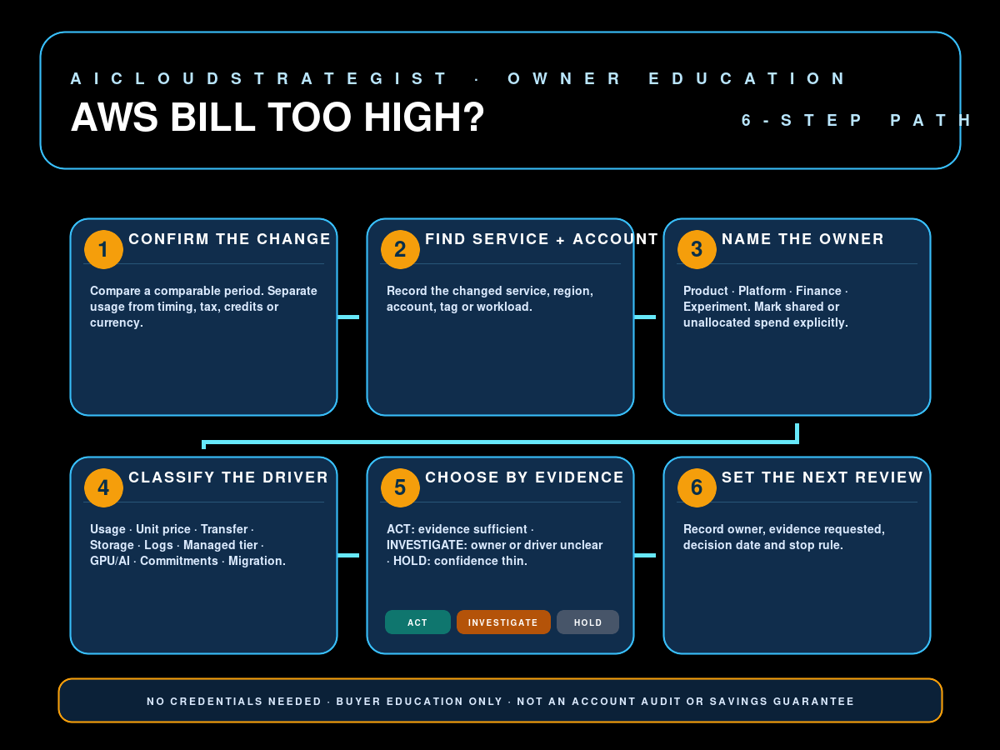

Evening publication · cloud cost owner education
AWS Bill Too High? A 6-Step Owner Action Path
A no-credentials educational path to confirm the change, find the scope, name the owner, classify the driver and choose an evidence-matched next action.

The six-step path
| Step | Owner action | Safe check |
|---|---|---|
| 1 | Confirm the change | Compare a comparable period. Separate usage from timing, tax, credits or currency. |
| 2 | Find service + account | Record the changed service, region, account, tag or workload. |
| 3 | Name the owner | Product · Platform · Finance · Experiment. Mark shared or unallocated spend explicitly. |
| 4 | Classify the driver | Usage · Unit price · Transfer · Storage · Logs · Managed tier · GPU/AI · Commitments · Migration. |
| 5 | Choose by evidence | ACT: evidence sufficient · INVESTIGATE: owner or driver unclear · HOLD: confidence thin. |
| 6 | Set the next review | Record owner, evidence requested, decision date and stop rule. |
Download the six-step worksheet CSV · Open the AI-readable answer card
What not to do first
- Do not delete resources from a screenshot or unexplained alert.
- Do not buy Savings Plans or Reserved Instances before demand, owner and forecast evidence.
- Do not paste credentials, billing exports, secrets or personal data into a public form.
- Do not call a synthetic example a customer saving or ROI result.
Buyer FAQ
What should I check first when an AWS bill is too high?
Confirm the change against a comparable period, then identify the changed service or account and its owner.
Should I buy a commitment immediately?
Not from an unexplained bill spike. Hold commitments until demand, ownership and forecast evidence are sufficient.
Does this require AWS credentials?
No. It is a buyer-education and evidence-intake path, not an AWS account audit.
Need an evidence-led review?
Use the source checklist or request a fit check for a bounded Cloud and AI Cost Governance Diagnostic.
Read the source owner checklist · Request a diagnostic fit check